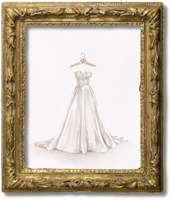

[59] When I select my wedding gown, I am reminded of the story of the young woman who wished to go to a dance with her lover, but could not afford a dress. She purchased a lovely white frock from a secondhand shop, and then later fell ill and passed from this earth. The coroner who performed her autopsy discovered she had died from exposure to embalming fluid. It turned out that an unscrupulous undertaker’s assistant had comestolen the dress from the corpse of a bride.
[60] The moral of that story, I think, is that being poor will kill you. Or perhaps the moral is that brides never fare well in stories, and one should avoid either being a bride, or being in a story. After all, stories can sense happiness and snuff it out like a candle.
This urban legend implies the poisonous nature of marriage, symbolized by the white dress and the embalming fluid it was drenched in. At first, the girl says that the moral of the story is that “being poor will kill you.” This perhaps alludes to the economic consequences of marrying a poor man. She then immediately changes the moral to never be a bride or be in a story. It reveals what she believes is a worse act: marrying at all. This points back to Foucault’s view of marriage being a catalyst of women's disempowerment. Soon after, the protagonist gets married, and she is followed by misery throughout the rest of her life, thereby affirming Foucault’s concept.